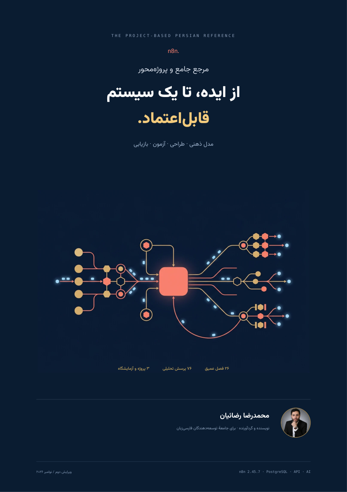
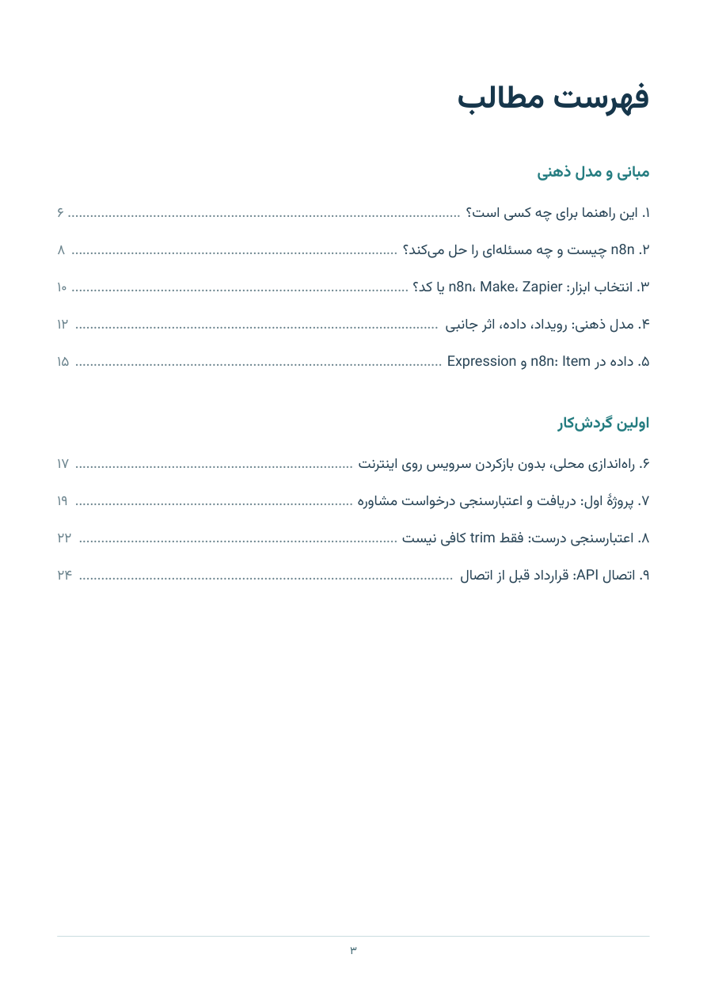
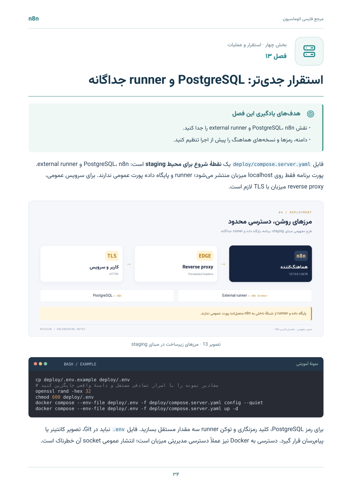

ENGINEERING AUTOMATION. WITH INTENTION.
فقط ابزارها را
وصل نکنید.
سیستم بسازید.
راهنمای جامع فارسی n8n؛ از مدل ذهنی تا طراحی، آزمون و بازیابی؛ همراه با ۲۶ فصل عمیق، ۷۶ پرسش تحلیلی و ۳ پروژه و آزمایشگاه.
متن قابل جستوجو و انتخاب · فهرست لینکدار · صفحهآرایی A4
محمدرضا رضائیاننویسنده و گردآورنده · Front-End Engineer↙جریان را بفهمید.
اثر را کنترل کنید.
دریافت ← تصمیم ← اقدام ← بازیابی
PDF صفحهآراییشده
از مبانی تا عملیات و AI
پاسخ تحلیلی + سناریو
نسخهٔ مبنای مثالهای n8n
BEYOND THE HAPPY PATH
اجرای موفق کافی نیست.
باید قابلاعتماد باشد.
این مرجع دربارهٔ ساختن یک بوم شلوغ از نودها نیست. دربارهٔ فرایندی است که ورودی نامعتبر را میشناسد، دوبارهکاری نمیکند، خطایش دیده میشود و بعد از خرابی، قابل بازیابی است. از یک مثال ساده شروع میکنیم و قدمبهقدم به تصمیمهای واقعی مهندسی میرسیم.
ONE REFERENCE. THREE WAYS IN.
از جایی شروع کنید
که به آن نیاز دارید.
لازم نیست همهچیز را یکباره بخوانید. یک مسیر انتخاب کنید؛ بعد با تمرین و شواهد، آموختهها را محک بزنید.
اولین گردشکار
مدل داده، Webhook و یک ورودی معتبر؛ نقطهٔ شروع ساختن.
سیستم قابلاعتماد
تکرار، خطا، زیرساخت و بازیابی؛ فراتر از مسیر موفق.
هوش مصنوعی با مرز
RAG، ابزار و تأیید انسانی؛ اختیار را آگاهانه طراحی کنید.
01 / BUILD WITH CONFIDENCE
از اولین رویداد،
تا یک جریان روشن.
داده و Expression، Webhook، اعتبارسنجی و API؛ همراه یک گردشکار قابل واردکردن که برای شروع به سرویس پولی نیاز ندارد.
02 / OPERATE RELIABLY
برای روزهای سخت.
Idempotency، Retry، PostgreSQL، runner خارجی، TLS، پایش و بازیابی؛ نه وعدهٔ مبهم «آمادهٔ پروداکشن».
امنیت جزئی از طراحی است.03 / KEEP AI UNDER CONTROL
هوشمند، با مرز روشن.
خروجی ساختاریافته، RAG، ابزارهای محدود و تأیید انسانی؛ AI بهعنوان یک جزء قابلکنترل، نه تصمیمگیرندهٔ بیمرز.
انسان در حلقهٔ تصمیم.LOOK INSIDE THE PDF
قبل از دانلود،
چند صفحه ورق بزنید.
این تصاویر مستقیماً از فایل PDF نهایی گرفته شدهاند؛ همان صفحهآرایی، همان فونت و همان محتوا.



تصویرهایی برای فهمیدن.
شش تصویر فنی اختصاصی، از مسیر داده تا RAG و کنترل انسانی؛ داخل PDF نهایی.


THE READING MAP
یک مسیر روشن.
شش ایستگاه کاربردی.
۲۶ فصل به هم پیوسته، تمرینهای قابل سنجش و پیوست مصاحبه؛ فهرست PDF با نقطهچین به صفحهٔ هر فصل وصل است؛ جزئیات بیشتر در بوکمارکها قرار دارد. عنوان هر بخش به صفحهٔ مربوط در فایل PDF پیوند دارد.
01مبانی و مدل ذهنیبخشهای ۱ تا ۵+
02اولین گردشکار واقعیبخشهای ۶ تا ۹+
03اعتمادپذیری و اثر جانبیبخشهای ۱۰ تا ۱۲+
04استقرار و عملیاتبخشهای ۱۳ تا ۱۸+
05هوش مصنوعی کنترلشدهبخشهای ۱۹ تا ۲۲+
06تست، عیبیابی و انتشاربخشهای ۲۳ تا ۲۶+
فصلی با این عنوان پیدا نشد. عبارت کوتاهتری را امتحان کنید.
مشاهدهٔ متن منبع مقاله ↗پاسخ را حفظ نکنید.
تصمیم را توضیح دهید.
۵۲ پرسش در فصلها و ۲۴ سناریوی تکمیلی؛ همراه با پاسخ تحلیلی، فرضها و مرز تضمین.
ورود به بانک سناریوها · صفحهٔ ۶۴ ↗اگر API مقصد timeout داد،
آیا عملیات واقعاً شکست خورده است؟
نه لزوماً. شاید اثر انجام شده باشد اما پاسخ نرسیده باشد. سؤال بعدی دربارهٔ کلید idempotency، استعلام وضعیت و مرز retry است؛ نه فقط روشنکردن گزینهٔ تلاش مجدد.
NOT JUST A DOCUMENT
بخوانید.
بعد، امتحان کنید.
PDF خروجی اصلی است. فایلهای همراه در مخزن قرار دارند تا منطق نمونه را ببینید، تستها را اجرا کنید و سناریو را در محیط محلی وارد کنید.
مشاهدهٔ مخزن GitHub ↗تست مستقل مثالها موفق بوده است. اجرای کامل در n8n، Docker و سرویسهای خارجی باید در محیط مقصد آزمایش شود؛ آزمایشگاه AI مستقل است؛ مدل، MCP و ابزار خارجی را متصل نمیکند.
GOOD TO KNOW
پیش از شروع.
آیا برای شروع به حساب پولی نیاز دارم؟
نمونهٔ اول فقط برای محیط محلی است و از سرویس پولی استفاده نمیکند. سرویسهای خارجی، میزبانی یا مدلهای AI بسته به انتخاب شما ممکن است هزینه داشته باشند.
فایل اصلی چیست و چه چیزهایی همراه آن است؟
فایل اصلی PDF فارسی ۷۱ صفحهای است. متن منبع Markdown و فایلهای JSON، JavaScript، Python و Compose در مخزن در دسترساند.
این راهنما تا چه زمانی بهروز است؟
منابع در ۱ نوامبر ۲۰۲۶ بررسی شدهاند و مثالها مبنای نسخهٔ 2.45.7 دارند. پیش از استقرار، مستندات، یادداشت انتشار و وضعیت امنیتی نسخهٔ مقصد را بررسی کنید.
آیا این محصول رسمی n8n است؟
خیر؛ این یک راهنمای مستقل است. n8n و علائم آن متعلق به صاحب محصولاند و مجوز مستقل دارند. حقوق متن، طراحی و عکس نویسنده محفوظ است.
YOUR NEXT WORKFLOW STARTS HERE
یک فرایند کوچک.
یک اثر واقعی.
نسخهٔ PDF را دریافت کنید؛ از یک مثال ساده شروع کنید
و آن را درست، امن و قابلاعتماد بسازید.